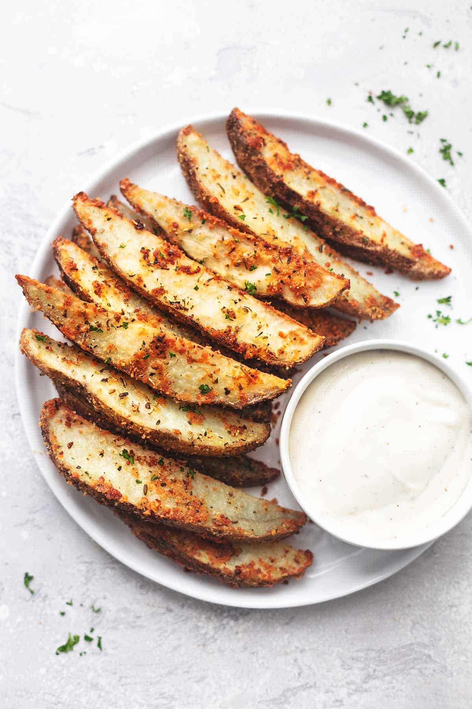

Baked Garlic Parmesan Potato Wedges

Description
This easy recipe for Baked Garlic Parmesan Potato Wedges will blow you away with its simplicity and fantastic garlic, Italian herbs, and parmesan flavors! They make a great side dish or appetizer for parties too!
Ingredients
- 3-4 large russet potatoes - sliced into wedges
- 4ts. Olive oil
- 2ts. Salt
- 2ts. garlic powder
- 2ts. Italian seasoning
- 1/2 cup shredded Parmesan cheese
- Fresh parsley (or cilantro) - ranch or blue cheese dressing for dipping
Steps
-
Preheat oven to 375. Lightly grease a large baking sheet and set aside.
-
Place potato wedges in a large bowl. Drizzle with olive oil and toss to coat. In a small bowl whisk together salt, garlic powder, and Italian seasoning. Sprinkle potato wedges with the shredded cheese, tossing to coat, then sprinkle with the seasoning mixture.
-
Place potato wedges on prepared baking sheet in a single layer with skin-sides-down. Bake for 25-35 minutes until potatoes are fork-tender and golden. Sprinkle with freshly chopped parsley and dressing for dipping.